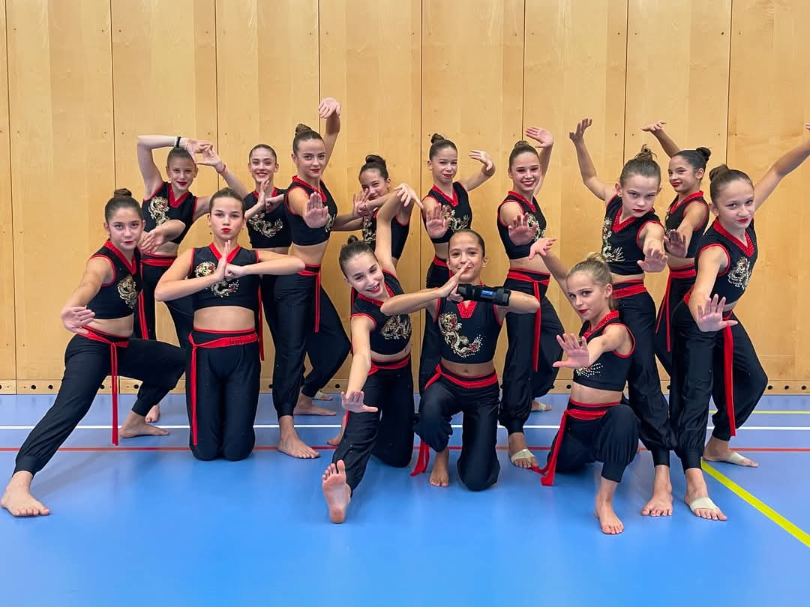

0
Éve vagyunk egy egyesület
0
Edzőnk
0+
Tanítványunk
0
Éve vagyunk egy egyesület
0
Edzőnk
0+
Tanítványunk
Ovis torna, gyermek fitnesz és tánc tanfolyamok Budán
Egyesületünk Fitness-Dance szakosztálya mindig vár minden tornázni és táncolni vágyó kislányt. Óvodás és iskolás tanfolyami csoportjainkon túl a gyerek és a junior versenyzői csoportunkhoz is van csatlakozási lehetőség.
A Fitvilág SE egy olyan sportegyesület, amely különleges helyet foglal el a budai gyerekek és fiatalok életében. A mozgás és a művészet ötvöződésével az akrobatikus tánc, a fitness és a show tánc világában kínálunk lehetőségeket fiatal sportolók számára. Célunk, hogy erős közösséget építsünk, ahol a lányok nemcsak fizikailag fejlődnek, hanem tánc művészeti készségeiket is csiszolják. Az évek során egy igazi családdá váltunk, ahol mindenki megtalálja a helyét, méghozzá egy támogató és inspiráló környezetben.
Miért válassz minket?